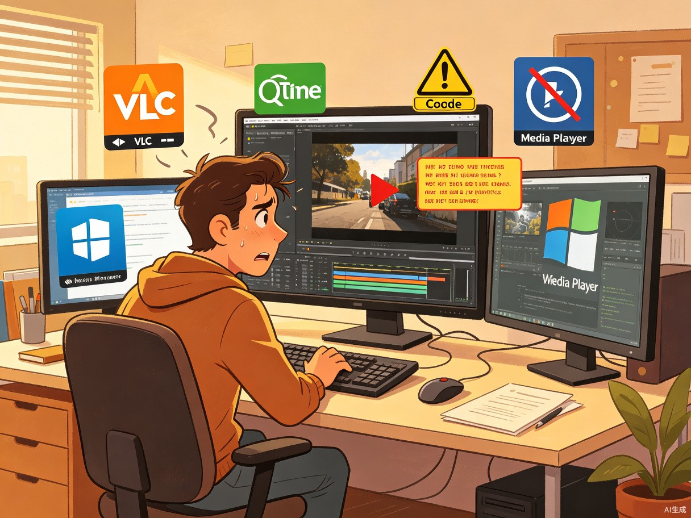
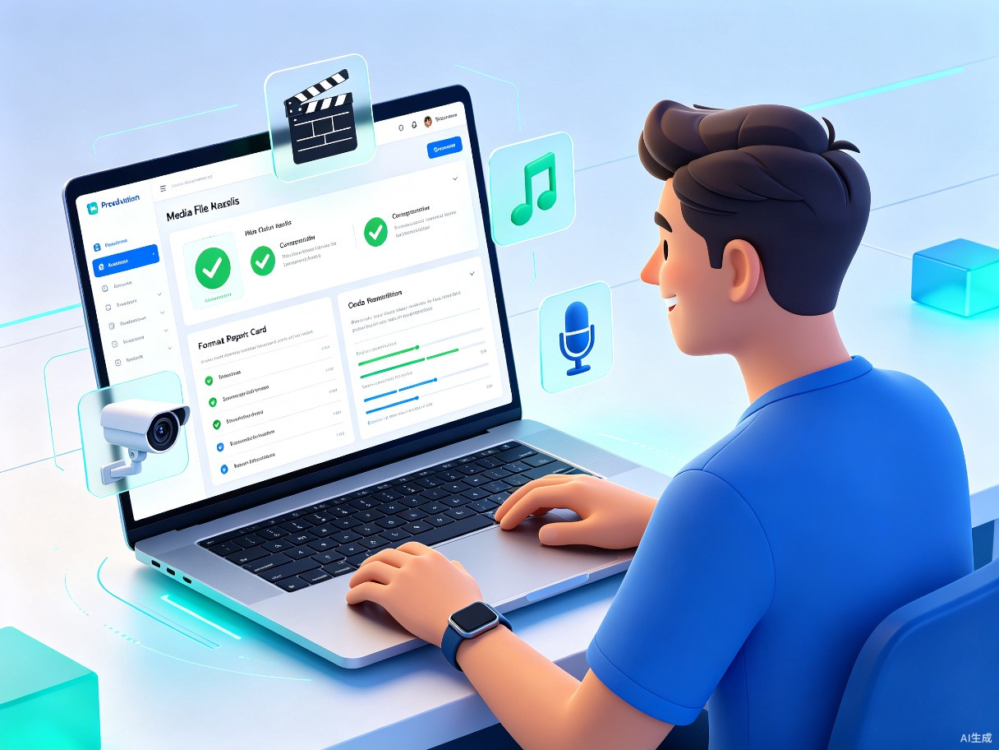

01 创意名称与介绍
MediaProbe — 你的音视频文件"体检医生"
MediaProbe 是一款面向普通用户和专业从业者的桌面端音视频文件分析工具。用户只需将文件拖拽到界面，即可在几秒内获得完整的格式检测报告——包括编码器类型、分辨率、帧率、比特率、音频通道数、字幕轨道、是否包含 HDR/杜比全景声等高级特性，以及该文件在主流播放器和平台上的兼容性评分。
想解决什么问题？ 用户经常遇到"视频下载了打不开"、"发给朋友的文件对方播不了"、"这段素材到底什么格式"的困惑。当前市面缺少一款既专业又易用的音视频文件分析工具，普通用户难以理解 FFmpeg 命令行输出，专业工具又过于复杂。
为什么会想到做这个？ 我在视频剪辑和影视后期工作中，经常需要确认素材的编码参数和兼容性，但每次都需要打开命令行工具或专业软件。身边非技术背景的朋友也经常因为格式不兼容问题向我求助。如果能有一个拖拽即用、结果一目了然的工具，就能大幅降低音视频格式理解的门槛。
产品形态： 一款跨平台桌面应用程序（支持 macOS / Windows / Linux），核心功能完全离线运行，无需联网即可完成全部分析工作。
02 目标用户及痛点

视频创作者 / 剪辑师
需要快速确认素材的编码格式、分辨率、帧率是否匹配项目需求。导入前检查素材是否包含特殊编码（如 10bit、HDR、ProRes），避免后期剪辑软件不兼容导致重新转码浪费时间。
播客与音频制作人
收到来自不同渠道的音频文件（WAV、FLAC、AAC、OGG），需要确认采样率、比特深度、声道数等参数，确保音频质量符合发布平台标准。
普通电脑用户
下载或拷贝了视频/音频文件后发现无法播放，但不知道原因——可能是编码器不支持、容器损坏、缺少解码器。需要一个直观的工具告诉他们"问题出在哪里"和"怎么解决"。
IT 运维与技术支持
企业内部培训视频、会议录像等文件格式多样，需要批量分析文件属性以进行标准化管理、存储优化和平台兼容性检查。
核心痛点分析
| 痛点场景 | 当前解决方式 | 问题 |
|---|---|---|
| 文件无法播放 | 自行搜索错误信息、尝试不同播放器 | 效率低，经常找不到根本原因 |
| 不确定格式参数 | 使用 FFmpeg 命令行或 MediaInfo | 输出专业术语难懂，普通用户无法理解 |
| 平台上传被拒 | 反复试错上传不同格式 | 浪费时间，影响工作进度 |
| 批量文件管理 | 手动逐个检查属性 | 文件多时极其耗时 |
| 特殊格式识别 | 查阅技术文档或论坛 | 信息分散，容易遗漏关键参数 |
03 核心功能设计
一键深度分析
拖拽或选择文件后，自动解析视频轨、音频轨、字幕轨、元数据等全部信息，支持超过 200 种音视频格式（MP4、MKV、AVI、MOV、WebM、FLAC、ALAC、DSD 等）。
兼容性评分
根据文件参数自动计算在各平台（YouTube、Bilibili、微信、抖音、Apple TV）的兼容性评分，并给出推荐转码方案。
波形与频谱可视化
内置音频波形和频谱图显示，直观呈现音频质量——是否有静音段、削波失真、频率分布异常等。
批量分析报告
支持文件夹级批量扫描，生成包含所有文件的汇总报告（支持导出为 JSON / CSV / HTML），便于素材管理和归档。
flowchart LR
A[拖拽/选择文件] --> B[文件头解析]
B --> C{格式识别}
C -->|视频| D[视频轨分析
编码器/分辨率/帧率/HDR]
C -->|音频| E[音频轨分析
采样率/声道/比特深度]
C -->|容器| F[容器信息
字幕轨/章节/元数据]
D --> G[兼容性引擎]
E --> G
F --> G
G --> H[评分与建议]
支持的格式一览
| 类别 | 支持格式 |
|---|---|
| 视频容器 | MP4MKVAVIMOVWebMFLVTSMPG |
| 视频编码 | H.264H.265/HEVCAV1VP9ProResDNxHRMPEG-2 |
| 音频格式 | MP3AACFLACWAVOGGALACDSDOpus |
| 特殊格式 | HDR10Dolby VisionDolby Atmos3D 视频多视角章节标记 |
04 产品界面概念

界面设计理念
MediaProbe 采用深色主题 + 信息分层的设计语言，将复杂的技术参数以可视化方式呈现。核心设计原则包括：
- 拖拽即用 — 零学习成本，文件拖进去立刻出结果
- 信息分层 — 普通用户看概览评分，高级用户可展开详细参数
- 色彩编码 — 绿色=完全兼容，黄色=部分兼容，红色=不兼容
- 一键导出 — 分析结果可快速分享给他人或存档
05 价值与意义
效率提升价值
将原本需要打开命令行、输入 FFmpeg 指令、阅读技术输出的流程，简化为3 秒拖拽操作。视频创作者在素材筛选阶段可节省大量时间，IT 运维人员批量处理文件管理时的效率可提升 5-10 倍。音频制作人无需切换多个工具即可完成参数校验。
社会价值
降低音视频格式知识门槛，让非技术用户也能理解文件格式差异。有助于减少因格式不兼容导致的资源浪费（反复转码、重新下载），推动数字内容在跨平台传播时的标准化意识。特别对于教育工作者、自媒体创作者等群体，可显著降低内容制作的技术壁垒。
06 发展路线
V1.0 — 基础分析版
支持主流视频/音频格式解析，拖拽分析，基础兼容性评分，单文件报告导出。
V2.0 — 专业增强版
增加批量分析、HDR/Dolby 识别、波形可视化、平台上传规格对照、报告模板。
V3.0 — 智能助手版
集成 AI 格式诊断建议、自动推荐转码方案、插件市场、文件修复建议。
07 总结
MediaProbe 的核心理念是让音视频文件透明化。通过将专业级的格式分析能力封装进一个简洁直观的桌面工具，我们希望每一位用户——无论是专业视频创作者还是普通电脑用户——都能在遇到"这个文件打不开"的问题时，第一时间获得清晰的诊断和解决方案，而不是在搜索引擎中迷失方向。
在 AI 技术快速发展的今天，音视频内容的生产和消费量持续爆发式增长，格式标准也在不断演进（AV1、VVC、空间音频等新格式的普及）。MediaProbe 将持续追踪这些变化，保持对最新格式的支持，成为用户最可靠的音视频文件"体检中心"。